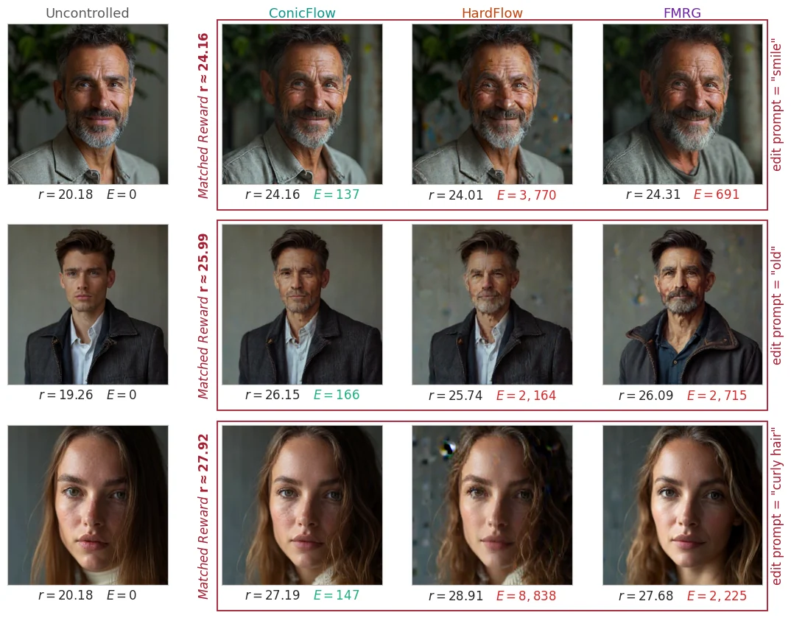
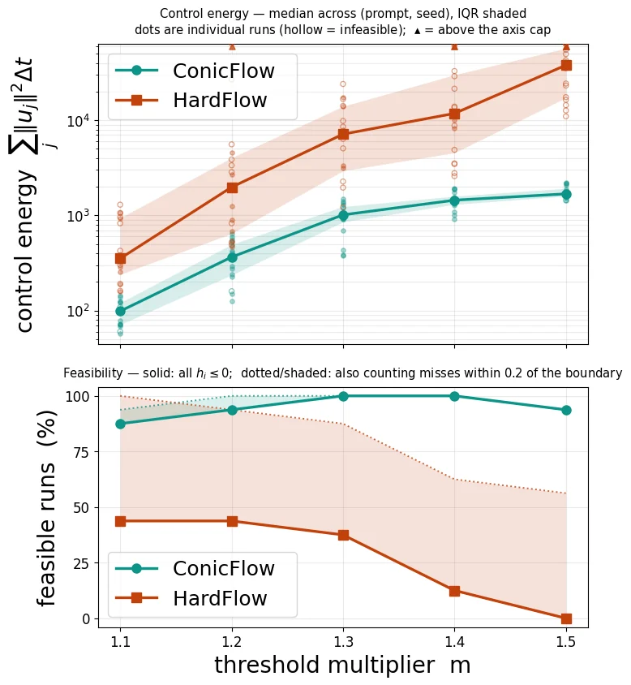
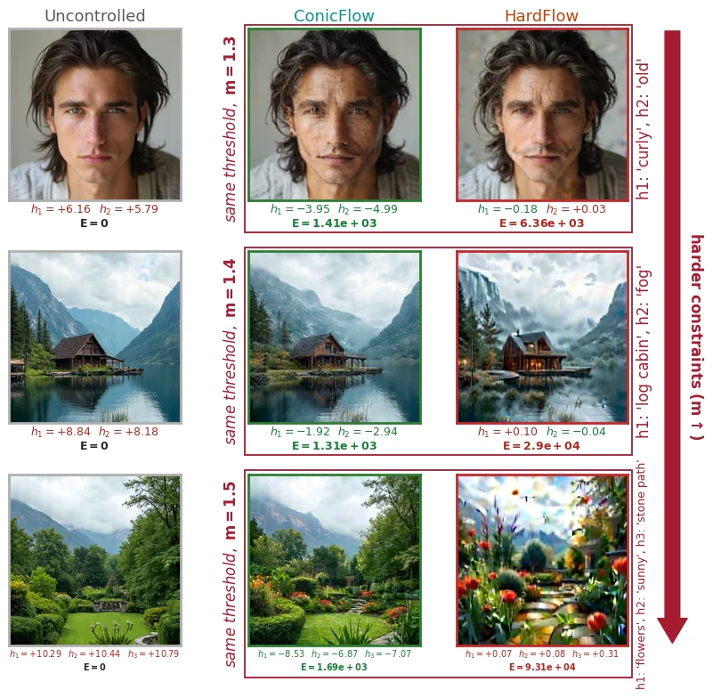
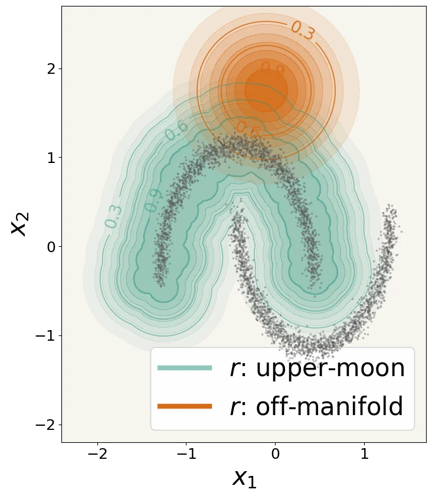
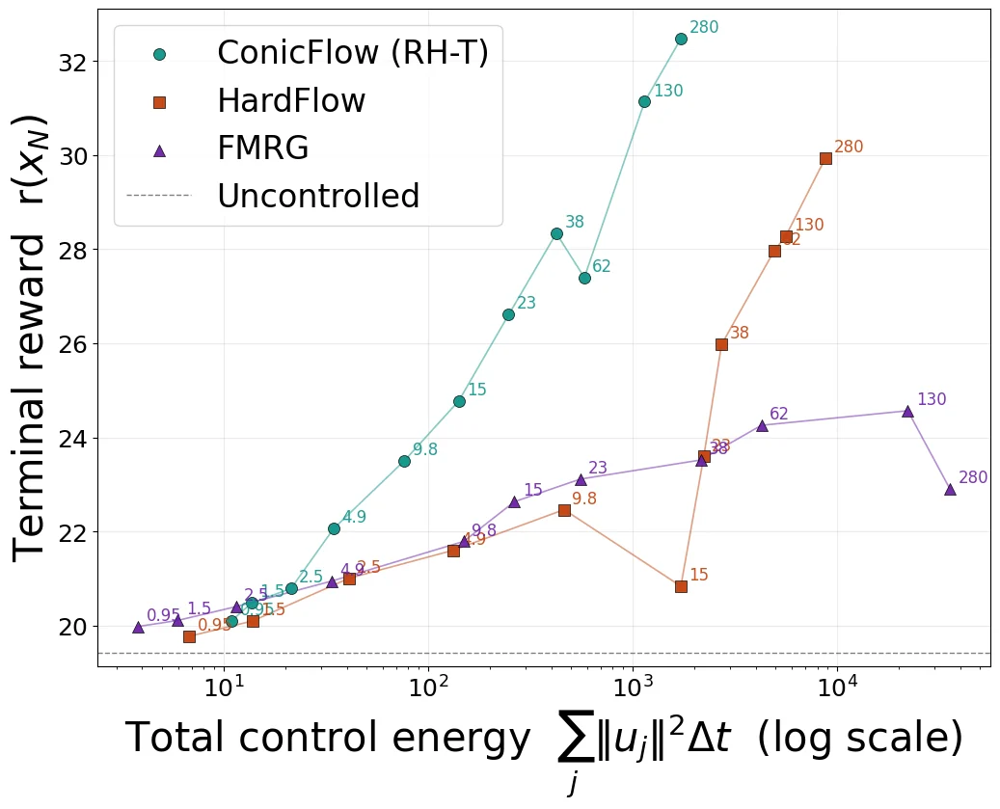
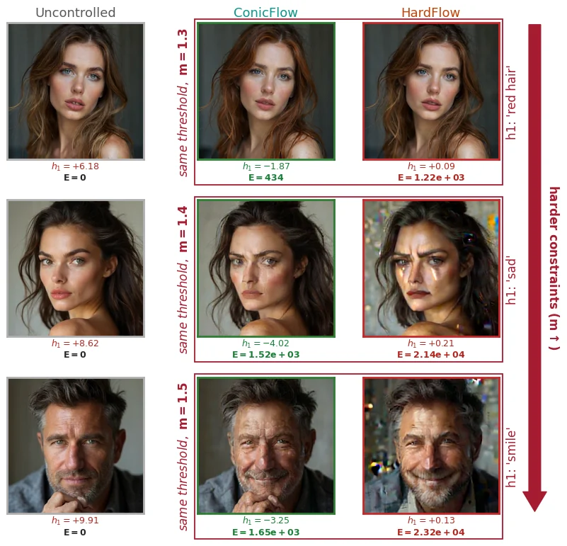

ConicFlow: Constrained Inference-Time Optimal Control for Flow Matching Models
Reward-guided generation with hard terminal constraints via receding-horizon, primal–dual optimal control of pretrained flow matching models.
Reward optimization subject to terminal feasibility
A pretrained flow matching model specifies a velocity field \(b_t\) that transports an initial sample to the data distribution. ConicFlow introduces a control input during inference, leaving the model parameters unchanged. It seeks a terminal state with high reward while penalizing the magnitude of interventions and imposing hard output constraints.
Problem (P-C), manuscript §1–2. Here \(r\) is a terminal reward and \(h:\mathbb R^d\to\mathbb R^m\) represents hard terminal requirements. Smaller \(\lambda\) increases the penalty on intervention.
Short control horizons, full terminal objectives
Optimizing the entire trajectory in path space is expensive for neural flow models. ConicFlow solves a sequence of shorter constrained optimization problems and executes only the first transition before replanning. The central methodological question is where to evaluate terminal reward and constraints.
Truncated terminal evaluation
Evaluate reward and constraints at the end of the local planning window, \(x_{j+H_j}\). This reduces the optimization horizon but introduces a mismatch with the original terminal-time objective.
Flow-map terminal prediction
Propagate the locally optimized endpoint to time \(N\) using the pretrained, uncontrolled flow map \(X_{j+H_j,N}\). Evaluate reward and constraints at this predicted terminal state.
What changes when we predict the terminal state?
For either local problem, ConicFlow alternates a primal minimization of the local Lagrangian with projected dual ascent, \(\mu^{(s+1)}=[\mu^{(s)}+\eta_\mu g_j(x_j^{(s)})]_+\). After \(K\) dual updates, it executes the first optimized transition and warm-starts the next window. See Algorithm 1 in the manuscript.
Approximation and convergence guarantees
The analysis connects continuous-time constrained inference to finite-step discretization, finite receding horizons, and inexact local primal–dual solutions. These bounds are conditional on the specific assumptions stated in the paper.
Discretization error
Optimal-value difference between continuous and discrete constrained problems under Assumption 1, including feasibility repairability.
Horizon bias
Constrained RH-H and RH-T under affine flow, bounded amplification, convex reward/constraints, and uniform feasibility. Constants differ.
Inexact local solver
Trajectory and terminal-violation bounds relative to exact receding-horizon solutions, with sensitivity-dependent factors.
Important qualification: RH-T is not proven uniformly better than RH-H. Remark 1 gives a sufficient condition for its tighter constrained-horizon constant (\(\kappa_A\le\sqrt{2}\)). Under these assumptions, a smaller bound constant is obtained.
Reward–energy trade-offs and constraint satisfaction
The paper evaluates both unconstrained reward-guided generation and hard-constrained sampling. In low-dimensional experiments, a flow-map model is trained on two-moons data. Image experiments use FLUX.1-dev with a flow-map LoRA and edit rewards from CLIP, ImageReward, and PickScore.
Matched reward, substantially less deviation

Comparison of unconstrained image edits at approximately matched reward. ConicFlow achieves the edit with lower control energy. Source: original paper, Figure 2.
Feasibility and energy as thresholds increase

Constraint feasibility versus required PickScore threshold and corresponding control energy; plotted from the paper.
Simultaneous desired attributes

Image-editing comparisons under multiple terminal constraints, where quality and feasible generation must be maintained jointly.
Two-moons reward geometry

Uncontrolled two-moons samples and two terminal reward functions, including an off-manifold reward.
Reward–energy Pareto frontier

Reward plotted against integrated control energy for unconstrained text-guided image editing.
Constraint strength and visual fidelity

Constrained edits across thresholds with ConicFlow and baseline comparisons.
Comparable rewards, less intervention
ConicFlow improves the reward-versus-control-energy trade-off across reported image-editing tasks relative to FMRG and HardFlow. The manuscript's Figure 2 shows comparisons at approximately matched terminal reward.
Lower-dimensional comparisons demonstrate that larger receding horizons can improve performance for off-manifold rewards; RH-H and RH-T do not consistently dominate one another.
Hard terminal feasibility
With PickScore threshold constraints, ConicFlow maintains feasibility close to 100% across the evaluated thresholds, whereas the reported HardFlow feasibility decreases as constraints become harder.
The paper reports up to a 20-fold reduction in control energy relative to HardFlow in the constrained image experiments; this is not a uniform bound over all settings.
Mean reward gain over a shared control-energy budget
Reported mean ± variation across \(n=4\) (prompt, seed) pairs per reward, relative to uncontrolled samples. Higher is better. Values use each reward's native units.
| Method | CLIP ↑ | ImageReward ↑ | PickScore ↑ |
|---|---|---|---|
| ConicFlow | 0.130 ± 0.018 | 2.048 ± 0.455 | 6.158 ± 0.728 |
| HardFlow | 0.118 ± 0.021 | 1.279 ± 0.374 | 1.736 ± 0.472 |
| FMRG | 0.065 ± 0.008 | 1.278 ± 0.504 | 2.670 ± 0.073 |
Paper, implementation, and citation
ConicFlow: Constrained Inference-Time Optimal Control for Flow Matching Models. Shervin Khalafi, Kasra Fallah, Sung Cho, Dongsheng Ding, James Anderson, Alejandro Ribeiro.
Provisional citation pending a public identifier. The manuscript's implementation URL is reproduced as provided and has not been independently verified to be publicly accessible.